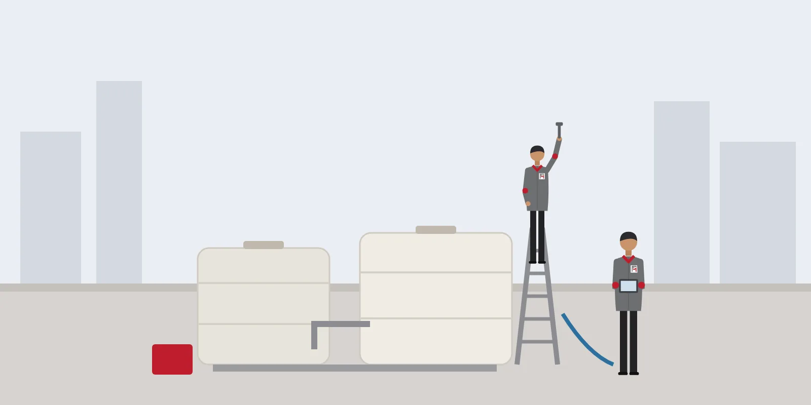

الخدمات المتخصصة
تنظيف خزانات المياه في الدوحة وجميع أنحاء قطر

المياه النظيفة تبدأ بخزان نظيف. تقدم JAFM قطر خدمات تنظيف خزانات المياه في الدوحة وجميع أنحاء قطر للفلل والمباني السكنية والمكاتب والمواقع التجارية. نعمل في مجال إدارة المرافق منذ عام 1977، ونحمل شهادات ISO 9001 وISO 14001 وISO 45001 الصادرة عن TNV.
لماذا يُعد تنظيف خزانات المياه مهمًا في قطر
تخزّن معظم المباني في قطر المياه في خزانات على الأسطح أو تحت الأرض قبل وصولها إلى الصنابير. وتبقى هذه المياه المخزّنة أيامًا متواصلة، وغالبًا في حرارة عالية. ومع مرور الأشهر تترسب الرمال والأتربة والرواسب في القاع، وقد تتكوّن الطحالب والأغشية الحيوية على الجدران، خاصة حيث تدخل أشعة الشمس أو حيث لا يُحكم الغطاء جيدًا.
قد تلاحظ العلامات قبل أن ينبّهك أحد:
- مياه عكرة أو متغيرة اللون
- رائحة عفنة أو غير معتادة
- رواسب رملية في المغسلة أو الدش
- بقع على التركيبات والملابس البيضاء
يحافظ التنظيف المنتظم على الخزان في حالة جيدة، ويساعد على حماية من يشربون تلك المياه أو يطبخون أو يغتسلون بها. كما يتيح لك اكتشاف التشققات أو الصدأ أو الأغطية غير المحكمة مبكرًا.
ما يشمله تنظيف خزانات المياه لدينا
لكل خزان طبيعته، لذلك نعاين خزانك أولًا. ويشمل التنظيف عادةً:
- فحص الخزان والغطاء وفتحات التهوية وأنابيب الدخول والخروج
- تفريغ الخزان وإزالة ما تبقى من مياه ورواسب
- فرك جدران الخزان وأرضيته وسقفه
- إزالة الرواسب والطحالب والمخلفات العالقة
- تعقيم الخزان من الداخل بمادة مناسبة لخزانات مياه الشرب
- الشطف جيدًا حتى لا تبقى أي بقايا لمواد التنظيف
- إعادة التعبئة وفحص بصري نهائي
- تقرير موجز بما وجدناه وأي أمور تحتاج إلى متابعة
ننظّف الخزانات البلاستيكية والفايبرجلاس والخرسانية والفولاذية، سواء فوق الأرض أو تحتها.
كيف تتم الخدمة، خطوة بخطوة
- اطلب عرض سعر. املأ النموذج على موقعنا مع ذكر موقعك ونوع المبنى.
- زيارة موقع مجانية. نزوركم لمعاينة الخزان والتحقق من إمكانية الوصول إليه ومناقشة احتياجاتكم.
- عرض سعر مكتوب. تحصل على عرض سعر مكتوب وواضح بناءً على حجم العمل ونطاقه.
- الاتفاق على الموعد. نخطط للعمل بما يناسبك. وبالنسبة للمباني، يمكننا مساعدتك في إعداد إشعار قصير للسكان.
- يوم التنظيف. يُفرَّغ الخزان ويُنظَّف ويُعقَّم ويُشطف ثم يُعاد ملؤه.
- التقرير. نطلعكم على ما وجدناه، مع أي إصلاحات أو متابعة نقترحها.
كم مرة يجب تنظيف خزان المياه؟
يُنصح عمومًا بتنظيف خزان المياه مرة أو مرتين في السنة على الأقل، وقد تحتاج بعض المواقع إلى تنظيف أكثر تكرارًا، مثل المباني ذات الخزانات القديمة، أو الخزانات المعرضة للشمس والغبار، أو الأماكن التي يستخدم فيها كثير من الناس المياه يوميًا كالمدارس وسكن العمال والمطاعم.
إذا لم يُنظَّف خزانك خلال العام الماضي، أو كنت تنتقل إلى عقار جديد، فهذا وقت مناسب لحجز التنظيف. وخلال زيارة الموقع يمكننا اقتراح جدول يناسب مبناك.
المباني التي نخدمها
ننظّف خزانات المياه لمجموعة واسعة من العقارات في الدوحة ومناطق أخرى من قطر، ومنها:
- الفلل الخاصة والمجمعات السكنية
- الأبراج والمباني السكنية
- المكاتب والمباني التجارية
- المدارس ودور الحضانة
- الفنادق والمطاعم والمقاهي
- المستودعات وسكن الموظفين
- العيادات والمنشآت الصحية
الأسئلة الشائعة
كم تكلفة تنظيف خزانات المياه في قطر؟
يعتمد ذلك على حجم الخزانات وعددها ومكانها وسهولة الوصول إليها. نقدم زيارة موقع مجانية ثم نرسل لك عرض سعر مكتوبًا، لتعرف التكلفة قبل بدء أي عمل.
كم يستغرق تنظيف خزان المياه؟
يستغرق تنظيف خزان فيلا واحد عادةً بضع ساعات، وقد تستغرق المباني الكبيرة ذات الخزانات المتعددة أو الخزانات الأرضية الكبيرة وقتًا أطول. ونوضح لك الوقت المتوقع في عرض السعر.
هل سنبقى دون مياه أثناء التنظيف؟
نعم، لفترة قصيرة، لأنه يجب تفريغ الخزان. ونتفق معكم على الموعد مسبقًا حتى تتمكنوا من الاستعداد. ويختار كثير من العملاء الصباح الباكر أو يومًا أقل انشغالًا.
هل مادة التعقيم آمنة لمياه الشرب؟
نستخدم مادة تعقيم مناسبة لخزانات مياه الشرب، ونشطف الخزان جيدًا قبل إعادة ملئه. والهدف ألا تبقى أي بقايا لمواد التنظيف في المياه.
هل تنظفون الخزانات الأرضية إلى جانب خزانات الأسطح؟
نعم، ننظّف النوعين. وخلال الزيارة الميدانية نتحقق من إمكانية الوصول إلى الخزان ونخطط للعمل بأمان.
احجز تنظيف خزان المياه
إذا لاحظت تغيرًا في شكل المياه أو رائحتها أو طعمها، أو حان موعد تنظيف خزانك، فتواصل معنا. املأ نموذج طلب عرض السعر على jafmqatar.com لحجز زيارة موقع مجانية والحصول على عرض سعر مكتوب. ويمكنك أيضًا الاتصال بنا على +974 4444 1416، أو زيارة مكتبنا في المكتب 504B، الطابق الخامس، مركز البستان، السد، الدوحة.